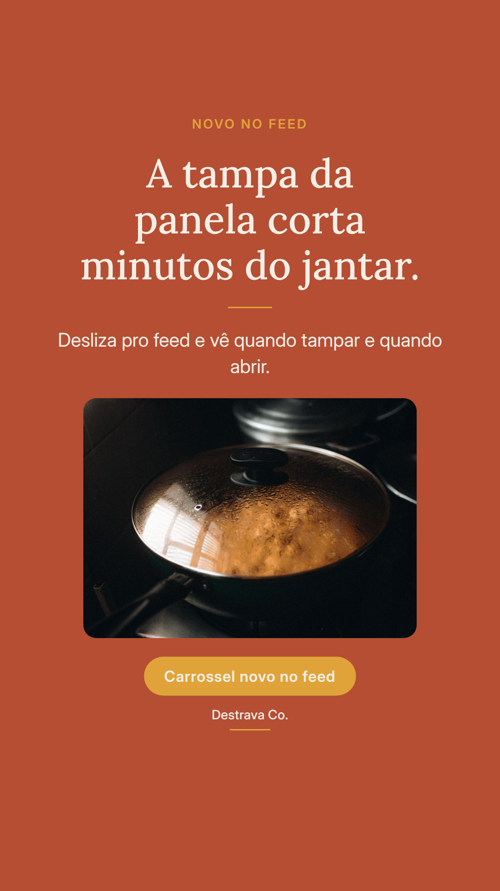
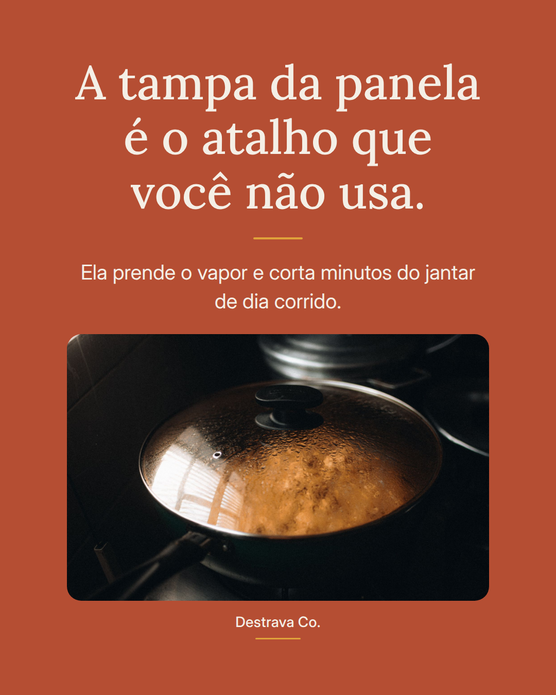
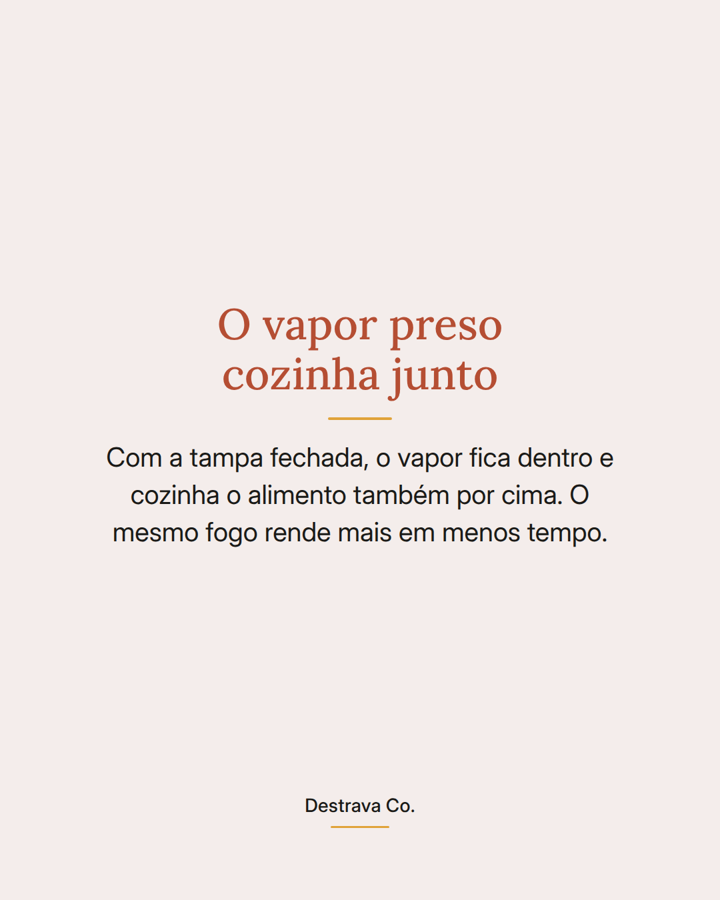
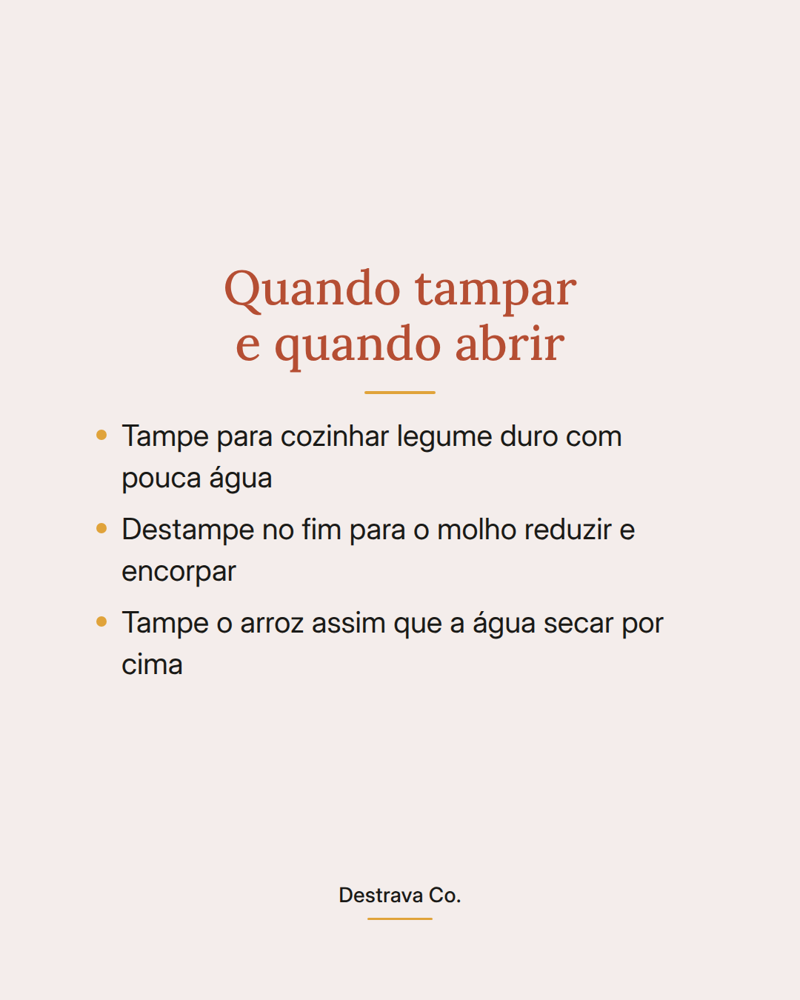
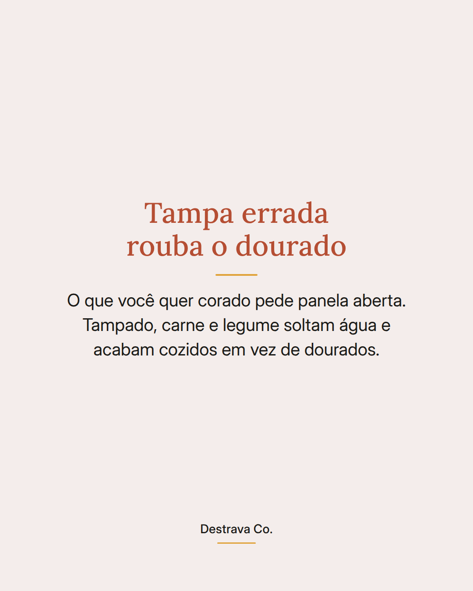
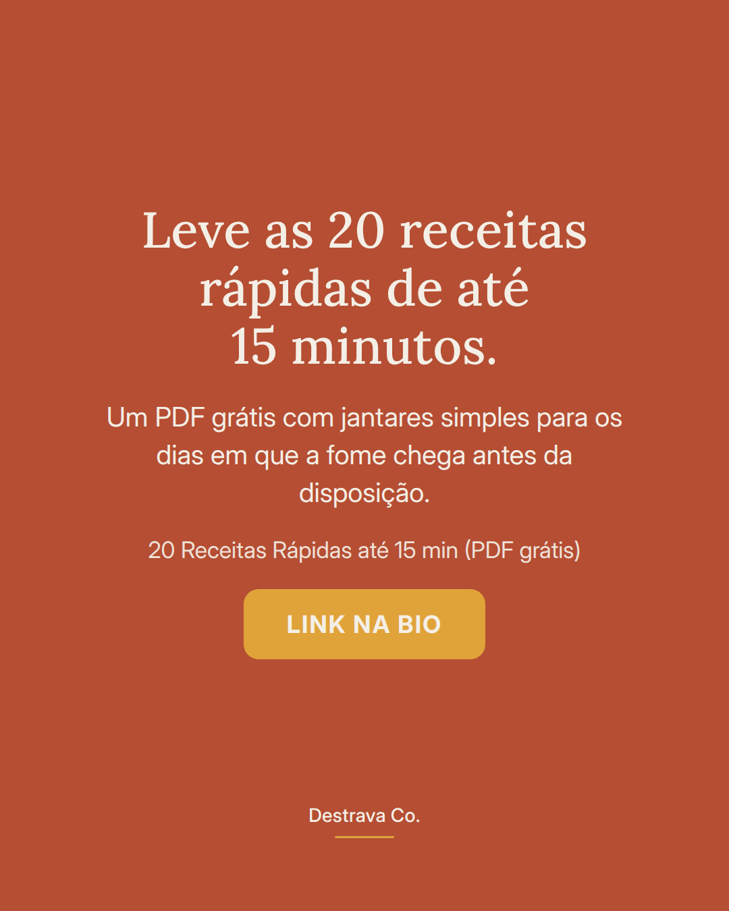

A tampa da panela é o atalho de tempo mais barato da sua cozinha.
Ela prende o vapor, cozinha o alimento por cima também e tira minutos do jantar de terça à noite.
A regra é simples: tampa fechada para cozinhar com pouca água, legume duro, arroz depois que a água some da superfície. Tampa aberta para reduzir molho e para dourar carne, cebola e legume que você quer corado.
Mesma panela, mesmo fogo, resultado diferente só pela tampa.
Salva para lembrar na hora do preparo e manda para quem cozinha com pressa. Se quiser mais ideias de jantar rápido, o PDF com 20 receitas de até 15 minutos está esperando por você.